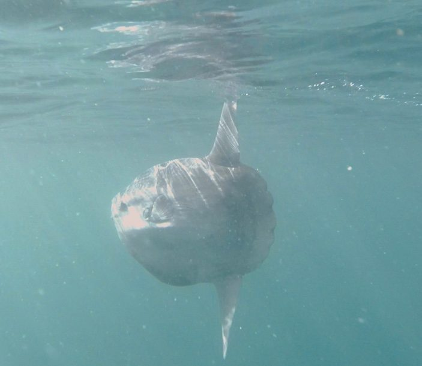
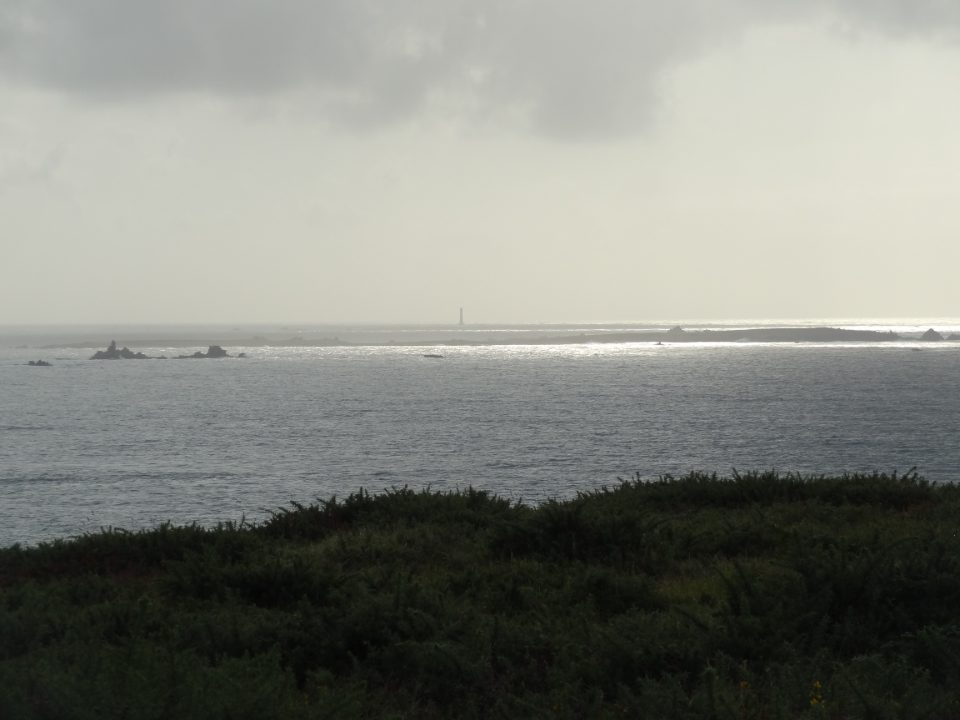
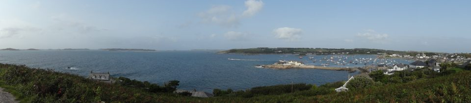

Scilly Isles, September 2017
This is our second trip to Scillies, booked right after the successful, joyful first trip in 2015, this time as a joint trip with another club. Again, we began with the long drive from London to Penzance, met up with people from another club there.
The three-hour crossing from Penzance to St Mary’s was not so bad, but some of us stayed on the deck to have fresh air. Our accommodation was a big house where ten of us stayed while two people who organised the trip stayed in the cosy top-floor flat in another house nearby.
It was drizzling and windy on Sunday morning, our first day to dive. With little hope that we could dive, we went to harbour to load our dive gear and cylinders onto our boat, Tiburon (meaning ‘Shark’). Our Skipper, Dave, was a calm, soft spoken man with a lot of knowledge of the sea at Scillies and also a photographer. The weather was constantly changing from drizzling to sunshine, then to rain. The wind was picking up day by day however, Dave always found a place for us to dive. The water was 14c – 15c and visibility was relatively good, about 5 – 10m.
We dived at various sites, wrecks and reefs covered with stunningly beautiful jewel anemones at different islands. We, of course, dived with seals. However what made this trip most memorable is that… we saw Sunfish! Two of us watched it swimming across before us during diving on the first day, and then, while we were moving from the first dive site to the second site on the following day, we spotted it swimming close to the surface! Dave manuvoured the boat to come close it and the Sunfish was, instead of swing away, pottering around there, waving its fin like a dog wagging its tail! As we didn’t expect Sunfish in this trip, it was a real treat!



Towards the end of the trip, we heard that the ferry might not set off on Friday, Saturday (on the day we were heading back to Penzance) and Sunday, and were a bit concerned. While extra one day or two to stay at St Mary’s is nice, most of us would have to go back to work on Monday...Thankfully, the ferry with us onboard departed to Penzance on Saturday, however it was cancelled for the following Monday.
It was a good, satisfying trip as ever and we are already planning another trip there in two years time.
by Akiko